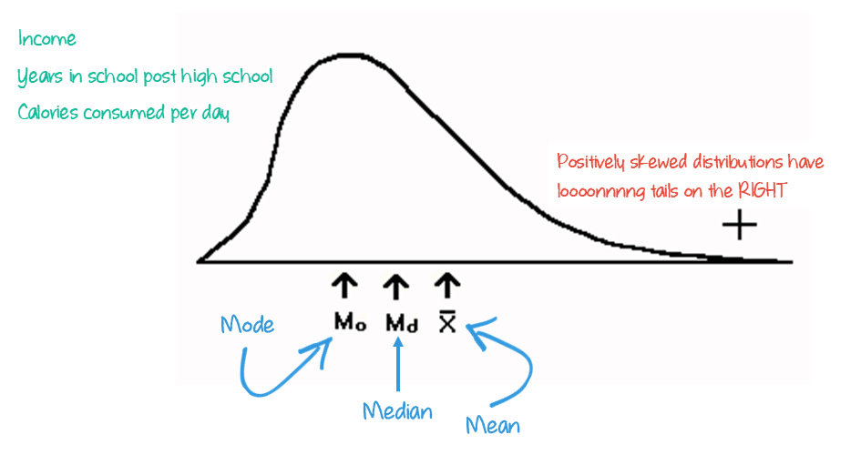
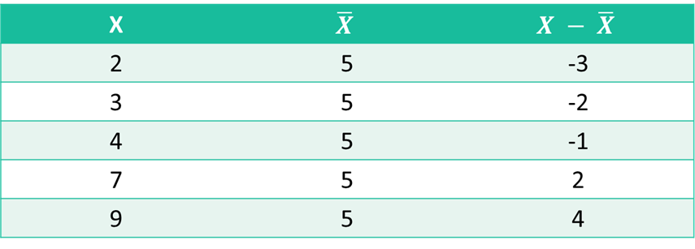
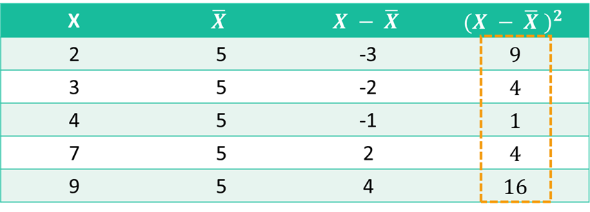

Central Tendency & Variability

LEARNING OBJECTIVES
- Explain the importance of measures of central tendency and variability.
- Calculate and interpret the mean, median, mode, range, interquartile range, variance, and standard deviation.
- Identify the relative strengths and weaknesses of the the measures.
- Determine and explain the shape of a distribution.
READINGS
Readings are available on Quercus.
Wheelan, Charles. 2014. “Descriptive Statistics: Who Was the Best Baseball Player of All Time?” Pp. 15–35 in Naked Statistics: Stripping the Dread from the Data. New York: W. W. Norton & Company.
Wickham, Hadley, Mine Cetinkaya-Rundel, and Garrett Grolemund. 2023. “Data Transformation.” in R for Data Science: Import, Tidy, Transform, Visualize, and Model Data. Beijing Boston Farnham Sebastopol Tokyo: O’Reilly Media.
TERMS
|
|
Measures of Central Tendency
We use summary statistics to find out what is TYPICAL in a distribution.
Watch this video for an overview of the measures of central tendency [11 minutes].
Mean
The mean is also known as the average. It is arguably the most commonly used measure of central tendency.
MEAN
The arithmetic average obtained by adding up all the scores and dividing by the total number of scores.

To calculate it, add all of the observations together, and divide by the number of observations.
Finding the mean in a list:
\(7, 4, 2, 8, 0, 9, 5\)
- Add all observations together: \(7 + 4 + 2 + 8 + 0 + 9 + 5 = 35\)
- Divide the sum by the number of observations: \(\frac{35}{7} = 5\)
It’s weakness is that it is sensitive to outliers, extreme scores in a distribution.
OUTLIERS
Values that are much lower or much greater than the rest of the values in a dataset.
Pretend the following values are annual incomes for 10 families:
| Family ID | Annual Income (CAD) |
|---|---|
| F01 | $48,000 |
| F02 | $52,000 |
| F03 | $45,000 |
| F04 | $50,000 |
| F05 | $53,000 |
| F06 | $49,000 |
| F07 | $46,000 |
| F08 | $51,000 |
| F09 | $65,000 |
| F10 | $250,000 |
Source: Totally fake data
Let’s use R to calculate the average.
- Click the
Run Codebutton below.
- Then, click
Submit Answer.
# store the values in an object called my_data
my_data <- c(48000, 52000, 45000, 50000, 53000,
49000, 46000, 51000, 65000, 250000)
# Use the mean function
mean(my_data)# store the values in an object called my_data
my_data <- c(48000, 52000, 45000, 50000, 53000,
49000, 46000, 51000, 65000, 250000)
# Use the mean function
mean(my_data)Hint: Just push the Run Code button to
see the output.
Most families in this sample earn between $45K–53K, but one high-income household pushes the average far above what’s typical: $70,900
Does this seem like an accurate representation of the typical annual income of these families? Only one family earns more than our average, whereas the rest of the sample earns significantly less than that.
If we calculated the average without the unusual (outlier) family with the $250,000 annual income, what would the mean?
- Remove the
250000income from our list. - Click the
Run Codebutton below to re-calculate the average. - When you’re satisfied with your code, click
Submit Answer.
# store the values in an object called my_data
my_data <- c(48000, 52000, 45000, 50000, 53000,
49000, 46000, 51000, 65000, 250000)
# Use the mean function
mean(my_data)# store the values in an object called my_data
my_data <- c(48000, 52000, 45000, 50000, 53000,
49000, 46000, 51000, 65000)
# Use the mean function
mean(my_data)Hint: Did you delete the comma
after 51000 & 250000 from the list?
This average is more representative of the typical annual income for families in the sample. About half of the families have an income below the mean, and half have an income above the mean.
To summarize, averages are easy to calculate but they can also be misleading.
Means are often depicted as line graphs, as seen in the figure below.

Median
The median is the middlemost point of your data.
MEDIAN
The score that divides the distribution into two equal halves.

Finding the median in a list with an odd number of observations:
\(7, 2, 1, 3, 4, 1, 5, 9, 2\)
- Put the list in order: \(1, 1, 2, 2, 3, 4,
5, 7, 9\)
- Pick the center number: \(3\)
Finding the median in a list with an even number of observations:
\(2, 0, 1, 2, 5, 1, 3, 1\)
- Put the list in order: \(0, 1, 1, 1, 2, 2,
3, 5\)
- Add the two center numbers & divide by 2: \(\frac{1 + 2}{2} = 1.5\)
The median is the value at the 50th percentile in a cumulative frequency distribution. (This is typically an easier way to find the median than counting individual observations.)
PERCENTILE
A score below which a specific percentage of the distribution falls.
If you score at the 25th percentile on a test, then 25% of the class did worse than you and 75% of the class did better.
If you score at the 90th percentile on a test, then 90% of the class did worse than you and 10% of the class did better.
A distribution is sometimes divided up into quarters: Q1, Q2, Q3, and Q4. The median is always Q2.
Let’s use R to calculate the median.
- Replace the blank line with the function
median.
- Click the
Run Codebutton below. - When you’re satisfied with your code, click
Submit Answer.
# store the values in an object called my_data
my_data <- c(48000, 52000, 45000, 50000, 53000,
49000, 46000, 51000, 65000, 250000)
# Use the median function
_____(my_data)# store the values in an object called my_data
my_data <- c(48000, 52000, 45000, 50000, 53000,
49000, 46000, 51000, 65000, 250000)
# Use the median function
median(my_data)Hint: Did you delete the word “mean” and replace it with “median”?
Watch this video for instructions on how to find the median in a frequency table [3 minutes].
Half of all observations are always below the median and the other half are always above the median.
Percentage distribution of opinion on whether the demands of your job interfere with your family life?

Survey question: How often do the demands of your job interfere with your family life?
Watch this video on how to find the median in a histogram [~3 minutes].
Could you find the median in this historgram?
Source: U.S. General Social Survey 2018-2022
Survey question [agekdbrn]: How old were you when your first child was born?
Mode
The mode is the value the occurs most often. If I asked you your favorite ice cream flavor and 3 people said vanilla, 4 people said chocolate, and 17 people said mint-chocolate chip, the mode would be “mint-chocolate chip.”
MODE
Category or score with the highest frequency (or percentage) in a distribution.
Finding the mode in a list:
\(7, 2, 1, 3, 4, 1, 5, 1, 2\)
- Put the list in order: \(1, 1, 1, 2, 2, 3, 4, 5, 7\)
- Pick the most frequent number: \(1\)
The number 1 appears 3 times in the list, more than any other number. That makes it the mode.
Heads Up!
In R, mean() and median() are standard functions which do what you’d
expect. mode() tells you the internal storage mode of the
object, not the value that occurs the most.
Finding the mode in a table
The mode can also be identified in a table. The mode is the category with the greatest frequency or the largest percentage.
Percentage distribution of opinion on whether people are helpful or look out for themselves

Survey question: Would you say that most of the time people try to be helpful, or that they are mostly just looking out for themselves?
Now, let’s try it by creating a frequency table in R and then finding the mode.
- Replace the blank line with
fairearn. - Click the
Run Codebutton to create a relative frequency table. - When you’re satisfied with your code, click
Submit Answer.
freq(gss_all$________, report.nas = FALSE) freq(gss_all$fairearn, report.nas = FALSE) Hint: Did you type fairearn in place of
the blank line?
Survey question: How fair is what you earn on your job in comparison to others doing the same type of work you do?
Bimodal:
A “bimodal distribution” has two distinct humps, even if the peaks aren’t exactly the same height.
BIMODAL
Two values or categories with the highest frequency.
Take a look at the figure below. It shows the distributions for daily new confirmed COVID-19 deaths per million people for Canada and the U.S.
We could identify the modal number of deaths to be around 10 deaths per million people in the U.S., occurring sometime in January of 2021.
For Canada, the mode occurs in May of 2020 at about 4.49 death per million Canadians.
If we only reported those modes and dates, it would seem like the most fatalities in the two countries occurred at wildly different times.
However, the graph makes it obvious that there were actually two peaks, occurring around the same time, in both countries: one in the spring of 2020 and one in the winter of 2021.
These distributions are examples of a bi-modal distribution: there are essentially two peaks (for each country).
Using the figure below to answer the following practice question.
These figure shows distributions of reviews for a variety of movies.

Choosing a Measure
An appropriate measure of central tendency depends on three factors:
- the way the variables are measured (i.e., the level of
measurement)
- the shape of the distribution
- the purpose of the research
The MODE is appropriate for nominal and ordinal variables.
It can be identified for interval-ratio level variables, but is often not useful.
The MEDIAN is
appropriate for interval-ratio and
ordinal variables.
It cannot be used for nominal level variables.
The MEAN can ONLY be determined for interval-ratio variables.
Distributions
Let’s make sure you’ve got the differences between the mean, median, and mode. And why they are important to know. Check out this video [11 minutes].
When the mean, median, and mode are all equal to one another, we say that the distribution is symmetrical.

The mean is a good measure of central tendency for a symmetrical distribution.
But, the mean can be skewed by very high or very low numbers. The mean is a less suitable measure of central tendency in distributions with extreme values on one side.
Positively Skewed Distribution

Heads up!
When a distribution is positively skewed, the mean is greater than the median.
Negatively Skewed Distribution

Heads up!
When a distribution is negatively skewed, the mean is less than the median.
What is the best measure of central tendency for each of the
following?
HINT: Identify the type of variable first. Then decide which measure is
appropriate.
Measures of Variability
In this tutorial, you will learn how to calculate measures of variability, values that describe the diversity in a distribution, for interval-ratio (aka continuous) variables. Measures of variability reveal how spread out the values in your dataset are.
Watch this short video explaining why we need measures of variability in addition to our measures of central tendency (mean, median, and mode) [~11 minutes]. WARNING: MATH AHEAD!
Range
RANGE
The difference between the highest and lowest values in a distribution.
Here’s a short video
showing you how to calculate the range [~3 minutes].
Finding the range in a list:
Women’s ideal age of marriage:
\(26, 23, 28, 27, 24, 25, 32, 25, 28, 25, 25, 26, 27, 26, 27, 25\)
- Put the list in order: \({\color{mathBlue} 23}, 24, 25, 25, 25, 25, 25, 26, 26, 26, 27, 27, 27, 28, 28, {\color{mathRed} 32}\)
- Subtract the min from the max: \({\color{mathRed} 32} - {\color{mathBlue} 23} = 9\)
What about using R to do the calculations for us? We can
use the IQR() function and try it out on our fake family
income data.
- Replace the blank line with
range. - Click the
Run Codebutton. - When you’re satisfied with your code, click
Submit Answer.
# store the values in an object called my_data
my_data <- c(26, 23, 28, 27, 24, 25, 32, 25, 28, 25, 25, 26, 27, 26, 27, 25)
# Use the range function on my_data
_____(my_data)# store the values in an object called my_data
my_data <- c(26, 23, 28, 27, 24, 25, 32, 25, 28, 25, 25, 26, 27, 26, 27, 25)
# Use the descr function on my_data
range(my_data)Hint: Delete the blank line and type “range” (without the quotes).
The strength of the range is that it is easy to calculate and simple to understand.
The weakness of the range is that it is based only on the lowest and the highest scores, which could be atypical and therefore it may be misleading.
For example, if we wanted to know about people’s average annual income, including Drake in the range would make it appear as if more people earn millions of dollars a year (most don’t).
Interquartile Range
INTERQUARTILE RANGE (IQR)
The width of the middle 50% of the distribution.
The interquartile range (IQR) is the difference between the lower (Q1) and upper (Q3) quartiles.

To calculate the IQR, you have to first find the values of Q1 and Q3.
Check out this video for a
demonstration on calculating the quartiles [~6 minutes].
Now that you know what the quartiles are, you can use this information to calculate the IQR. To do so, you simply subtract Q1 from Q3.
IQR in a list with an odd number of observations:
\(2, 3, 3, 4, 4, 6, 7, 7, 7, 8, 9, 11, 12\)
- Q1 is the median of the numbers
below the median: \({\color{mathOrange} 2, 3, 3, 4, 4, 6,}
{\color{mathBlue} 7},
7, 7, 8, 9, 11, 12\) (\(\frac{3 +
4}{2}\)) \(= {\color{mathOrange}
3.5}\)
- Q3 is the median of the numbers
above the median: \(2, 3, 3, 4, 4, 6, {\color{mathBlue} 7},
{\color{mathRed}7, 7, 8, 9, 11, 12}\) (\(\frac{8 + 9}{2}\)) \(= {\color{mathRed} 8.5}\)
- Subtract Q1 from Q3: \({\color{mathRed} 8.5} - {\color{mathOrange} 3.5} = 5\)
IQR in a list with an even number of observations:
\(3, 4, 5, 7, 9, 10, 11, 13\)
- Q1 is the median of the numbers
below the median: \({\color{mathOrange} 3, 4, 5, 7, }
9, 10, 11, 13\) (\(\frac{4 +
5}{2}\)) \(= {\color{mathOrange}
4.5}\)
- Q3 is the median of the numbers
above the median: \(3, 4, 5, 7,
{\color{mathRed}9, 10, 11, 13}\) (\(\frac{10 + 11}{2}\)) \(= {\color{mathRed} 10.5}\)
- Subtract Q1 from Q3: \({\color{mathRed} 10.5} - {\color{mathOrange} 4.5} = 6\)
Heads Up!
The median of the list is \(8\).
What about using R to do the calculations for us? We can
use the quantile() function to get the minx, Q1, Q2
(median), Q3, and Q4 (max). IQR() function will simply
repot the IQR.
But, there’s a catch! The iqr() function is simple, but
there are actually 9 different ways that R can calculate the IQR!
Yikes!
To match our calculations:
- odd number of observations = type 6
- even number of observations = type 5
Try it out on our fake data and see if you can match our hand calculations.
- Replace the blank line with the correct type number.
- Click the
Run Codebutton. - When you’re satisfied with your code, click
Submit Answer.
# store the values in an object called my_data
my_data <- c(2, 3, 3, 4, 4, 6, 7, 7, 7, 8, 9, 11, 12)
# Choose the correct type and then use the IQR function on my_data
quantile(my_data, type = _)
IQR(my_data, type = _)# store the values in an object called my_data
my_data <- c(2, 3, 3, 4, 4, 6, 7, 7, 7, 8, 9, 11, 12)
# Choose the correct type and then use the IQR function on my_data
quantile(my_data, type = 6)
IQR(my_data, type = 6)Hint: Delete the blank lines and type “6” (without the quotes).
# store the values in an object called my_data
my_data <- c(3, 4, 5, 7, 9, 10, 11, 13)
# Choose the correct type and then use the IQR and quantile functions on my_data
quantile(my_data, type = _)
IQR(my_data, type = _)# store the values in an object called my_data
my_data <- c(3, 4, 5, 7, 9, 10, 11, 13)
# Choose the correct type and then use the IQR and quantile functions on my_data
quantile(my_data, type = 5)
IQR(my_data, type = 5)Hint: Delete the blank lines and type “5” (without the quotes).
Standard Deviation
A key measure of spread in statistics is the standard deviation.
STANDARD DEVIATION
A measure of variation for interval-ratio variables.
Along the way to calculating the standard deviation, you calculate the variance of a distribution. The variance is also a measure of variation of a distribution, but it is difficult to interpret because the number doesn’t reflect interpretable units.
Therefore, most of the time we continue on in our calculations to determine the standard deviation. The standard deviation is expressed in the same units as the observations. Meaning, if our variable is age, the standard deviation will be expressed in years. If our variable is income, the standard deviation will be expressed in dollars.
If all of the values in a distribution are identical, the standard deviation would be equal to zero. The mean, median, and mode would all be the same value, as there would be no variation between the values. For example, let’s say I asked a sample of 30 students how many hours they spent watching Netflix last week, and everyone reported 10 hours. The mean, median, and mode would all be 10. The standard deviation would be zero because there was no variation in the answers.
Now, let’s say I asked these same 30 students this question the following week. They all mostly reported 10 hours of Netflix viewing this week too. Except, this week, one person reported zero hours because they canceled their Netflix account and one person was home sick for the week and reported 20 hours of Netflix viewing. The mean, median, and mode would remain 10 hours per week. But, the standard deviation would be larger than zero because there was variation in the reported hours. The larger the standard deviation, the more variation there is in a distribution (i.e., values in a dataset).
5 steps for calculating the standard deviation.
Calculate the mean.
Subtract the mean from every value (deviation from the mean).
Square each “deviation from the mean.”
Calculate the mean of the squared “deviations from the mean.”
Take the square root of this new mean!
Heads Up!
The mean of the squared “deviations from the mean” is the variance!
Did I lose you there? Watch this video for a demonstration [4 minutes]. Here’s where the real math comes in!
Note the end of the video mentions there are two formula’s for calculating the standard deviation (and variance). Technically, instead of summing the “squared deviations from the mean” and dividing the sum from the total number of observations, when using a sample, statisticians divide by the total number of observations minus one.
Once the sample sizes become large enough, there’s a negligible difference between the two. In this course, we’re not going to worry about the difference. Always use the population variance and standard deviation equations, if asked to calculate by hand.
Interpretation
Okay, now that you know how to calculate the standard deviation, why would you want to?
Watch this video for the explanation for why this is a useful skill in statistics [4 minutes].
The interpretation of a standard deviation requires knowing the mean. Then, you can say something like this:
I expect the average [whatever you're studying] to differ by [your standard deviation] from the mean.For example, if the average number of minutes watching television per day was 250 and the standard deviation was 90, you could say:
I expect the average number of minutes of television watched per day to differ by 90 minutes from the mean (250 minutes).Let’s see this in action
\(2,3,4,7,9\)
Step 1 Calculate the mean \(\bar{X}\)
\(\frac{2 + 3 + 4 + 7 +9}{5} = 5\)
Step 2 Subtract the mean (\(\bar{X}\)) from every value (\(X\))

Step 3 Square each difference
Step 4 Calculate the mean of the squares

\(\frac{9 + 4 +1 + 4 +16}{5} = 6.8\)
Heads Up!
6.8 is known as the variance!
Step 5 Take the square root of the variance
\(\sqrt{6.8} = 2.6\)
I expect the average [whatever you’re studying] to differ by [your standard deviation] from the mean.
Example: Mean: 5; SD: 2.6
I expect the average [number of household family members] to differ by [2.6 people] from the mean [of 5 people per household].
Wow, this is going to get tedious with any more cases. Let’s make
R do this for us instead. Use the sd()
function and try it out on our fake family income data.
- Use the
sd()withmy_data. - Click the
Run Codebutton. - When you’re satisfied with your code, click
Submit Answer.
# store the values in an object called my_data
my_data <- c(48000, 52000, 45000, 50000, 53000,
49000, 46000, 51000, 65000, 250000)
# Use the sd() function on my_data below# store the values in an object called my_data
my_data <- c(48000, 52000, 45000, 50000, 53000,
49000, 46000, 51000, 65000, 250000)
# Use the sd() function on my_data below
sd(my_data)# store the values in an object called my_data
my_data <- c(48000, 52000, 45000, 50000, 53000,
49000, 46000, 51000, 65000, 250000)
# Use the sd() function on my_data below
sd(_____)Learning Check 03
Please answer the following questions to verify you understand the topics in this tutorial.
Source: U.S. General Social Survey 1994-2022
Using our data from before, calculate the mean and the median (with R or by hand).
# store the values in an object called my_data
my_data <- c(48000, 52000, 45000, 50000, 53000,
49000, 46000, 51000, 65000, 250000)
# Use the mean and median functionsYou went back to the original surveys and find out that there was a
typo with the outlier. Instead of 250,000, the actual
income was 25,000. Correct this in your data and calculate
the mean and the mode again.
# Create a frequency table for the `premarsx` variable.You’ve been asked to explain how the divorce rate has changed since the 1990s. To analyze this trend, you’ve been provided with a sample dataset containing the 1991-1995 and 2016-2020 divorce rates for Canada’s 10 provinces.
Number of persons who divorced per 1,000 married persons| region | div_rate_1995 | div_rate_2020 |
|---|---|---|
| Newfoundland and Labrador | 7.9 | 6.2 |
| Prince Edward Island | 8.8 | 6.6 |
| Nova Scotia | 11.3 | 7.3 |
| New Brunswick | 9.4 | 7.4 |
| Quebec | 14.3 | 8.0 |
| Ontario | 12.2 | 7.2 |
| Manitoba | 11.4 | 7.1 |
| Saskatchewan | 10.6 | 7.7 |
| Alberta | 14.1 | 9.7 |
| British Columbia | 14.2 | 7.5 |
Source(s): Canadian Vital Statistics – Divorce Database (3235).
Start your analysis by calculating the statistics needed to fill in the following table.
Then, answer the questions below. Now’s a good time to get out some scratch paper and a pencil to do some math.